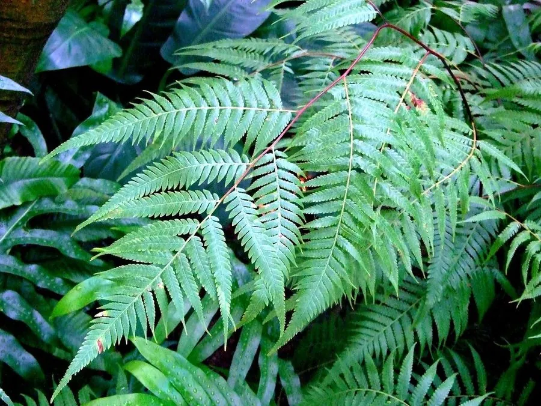

蕨类与裸子植物 · 植物界
金毛狗 Cibotium barometz

金毛狗是大型树状蕨类，根状茎密生金黄色长毛，形如金毛狗头，是传统中药材，也是国家重点保护植物。
- 分类
- 门蕨类植物门纲木贼纲目桫椤目科金毛狗科属金毛狗属
- 栖息环境
- 山谷溪边、林下阴湿处与酸性土壤，喜温暖湿润半阴
- 地理分布
- 中国华南、西南及台湾等地，东南亚也有分布
- 保护级别
- IUCN 暂无评估；中国国家二级重点保护野生植物
物种志
金毛狗是金毛狗科的大型蕨类，植株高可达 1–2 m。根状茎粗壮横走，密生金黄色、有光泽的长柔毛，露出地面时形似伏卧的金毛狗头，因此得名。叶丛生，叶柄粗壮，基部同样密布金毛；叶片为三回羽状复叶，末回小羽片细密，纸质至革质，叶背灰绿色。孢子囊群着生于叶背边缘，呈蚌壳状开裂。
金毛狗喜温暖湿润和半阴环境，多生于山谷溪边、林下阴湿处与酸性土壤中，在华南、西南和台湾的山区有分布。它的根状茎在中药里称“金毛狗脊”或“狗脊”，有补肝肾、强腰膝、祛风湿之效，金毛还被用于外伤止血，因此长期遭到过度采挖，野生资源减少。金毛狗已列入中国国家二级重点保护野生植物名录。它植株高大、叶姿优美，也可作园林观赏与盆栽。
形态与习性
- 株高1–2 m，叶丛大型
- 根状茎粗壮横走，密生金黄色长毛
- 叶三回羽状复叶
- 孢子囊群蚌壳状开裂，生于叶背边缘
- 药用根状茎入药称“狗脊”
- 保护国家二级重点保护野生植物
趣味知识
- 金毛狗的根状茎长满金黄色长毛，露在地面时像一只伏卧的金毛狗。
- 中药材“狗脊”就是它的根状茎，有补肝肾、强腰膝之效。
- 因为药用价值高，野生金毛狗曾被大量采挖，现为国家二级保护植物。